Roles inside a company SOP — plus a shared message pool that each role
subscribes to selectively.Context filtering is not new in 2026.✓ Roles, process, context routing ·
✗ All three fixed at design time
Arc · Step 42024–25 · The two threads we follow
Two of many
The two threads that set up today’s papers
Not a map of the field. Also live, and not shown: learned routing (Step 6, next),
interoperability protocols (MCP · A2A), agentic RL, cross-session memory, verification and debate.
School 1 · Better rooms
Disposable context
THREAD, Context-Folding, Claude Code: a subtask branches into its own context; on
return the branch’s steps are deleted. Only the summary survives.
MetaGPT filtered what came in.
This throws reasoning away.
✗ Whoever moves in is still a fixed job title
School 2 · Redesign the flow
Auto-written scores
AutoFlow, AFlow, EvoFlow: draw collaboration as a graph, let machines search for a good one.
✗ Once designed, it’s frozen — no mid-run rerouting
Arc · The key distinctionWorkflow vs. Orchestration
Workflow
is a written score.
Orchestration
is a bandleader calling solos.
The spine of the whole talk. Automated workflows perfected the left side;
everything after this slide is about the right.
Arc · Step 52023–25 · The conductor takes the podium
Three small steps to a named conductor
2023
LLMCompiler — calls into a
dependency graph, run what can run together. Ancestor of “stop queueing.”
2024
Magentic-One names the role:
the lead agent is formally the Orchestrator.
2025
AgentOrchestra — a
conductor over predefined specialists. Fixed ensemble.
So by 2025 the conductor exists and has a job description.
What it still can’t do is hire.
Arc · Step 62025 · Puppeteer · ToolOrchestra
The baton gets trained
Now the choice itself is learned
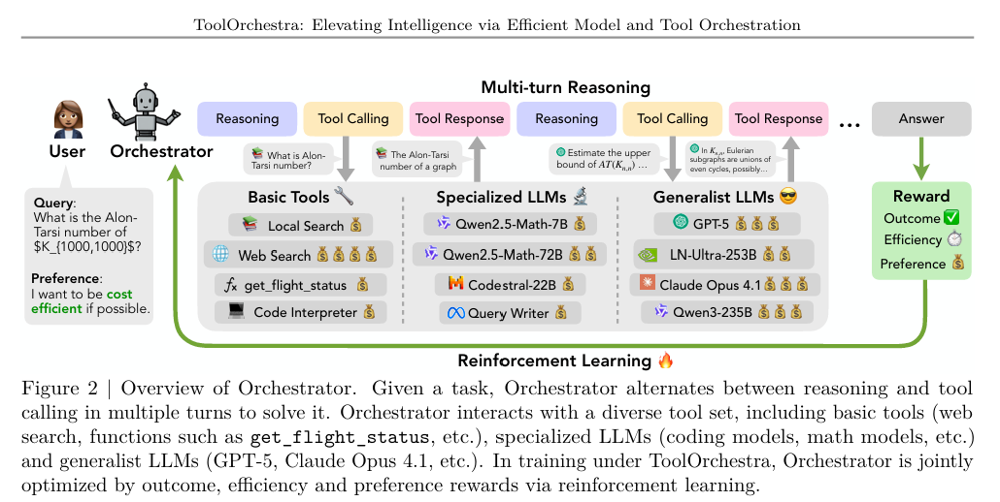
Whom to call next is trained by RL over a three-tier pool.
✗ Still one task per turn — and it picks from a roster, never assembles.
Arc · ConsolidatedOne ladder
Stage
Representative work
✓ What it learned
✗ What it still lacked
One agent acting
CoT / ReAct · 2022
Interleaved thought and tools
Everything in one head
Role specialization
CAMEL / MetaGPT · 2023
Role-play plus SOP
Roles and flow hard-wired
Better rooms
THREAD / Claude Code · 2025
Isolated clean context
No on-the-fly assembly
Auto-designed flows
AFlow / EvoFlow · 2024–25
Scores without hand-writing
Frozen once written
Parallel execution
LLMCompiler · 2023
Dependency-aware parallel calls
Parallelism is planned, not decided
Conductor named
Magentic-One · 2024
Orchestrator as a role
Fixed ensemble
Trained conductor
Puppeteer / ToolOrchestra · 2025
Orchestration is learnable
One at a time; picks, never assembles
Today
AOrchestra / ParaManager · 2026
Assembly at runtime · parallelism as a live decision
Today’s topic
Each rung answers a wall the one before it hit. The last two gaps are what the
2026 papers each take on — neither closes both.Six of these rungs are my additions, not either paper’s related
work.
Arc · HandoffToday’s two papers
The two gaps left standing
Gap 1
No on-the-fly assembly
It picks from a roster. It never builds a specialist carrying these tools and
this context for this job.
→ AOrchestra
Gap 2
One task per turn
Dispatch one, wait for the report, then the next — three unrelated tasks still queue up.
→ ParaManager
II
AOrchestra
Teaching the company to assemble on the fly
AOrchestra · The contributionWhat it buys — before how it works
Stop hiring a fixed cast. Write the role at runtime.
The gap
Every prior system ships a fixed cast of roles, decided before the task
is seen.
A task outside the cast has nobody to do it.
The move
A role becomes a fillable work order: ⟨I, C, T, M⟩ — written fresh
per subtask, executed, discarded.
And that work order can itself be learned.
What it bought
+22.13
average pass@1 — 71.62 vs 49.49 — over three benchmarks, same backbone.
And it costs about 11×.
The paper’s own words: an agent is “a quadruple ⟨Instruction, Context, Tools,
Model⟩” — a recipe for composing capabilities on demand.
AOrchestra · PositioningFigure 2
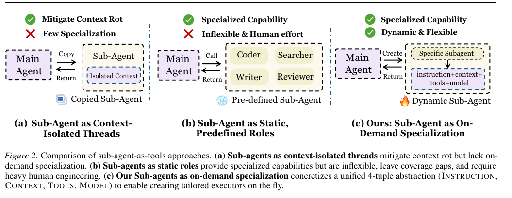
(a) a cloned thread — eases context rot, no specialization.
(b) predefined roles — capable, rigid.
(c) this paper — specialization on demand, discarded after use.
AOrchestra · CoreThe quadruple (I, C, T, M)
A work order filled in at runtime
⟨ I , C ⟩Working memorywhat it knows
Instruction
What is the job — and what counts as finished?
Context
What does it actually need to know to start?
⟨ T , M ⟩Capabilitieswhat it can do
Tools
The smallest toolset that still gets it done
Model
Cheap and quick, or strong and expensive?
Two axes, not four items: one half decides what
the worker knows, the other decides what it is able to touch.Change one field and you have a different worker — that is the whole idea.
AOrchestra · The whole machineFigure 3 · four panels — read (a) and (b) now, park (c) and (d)
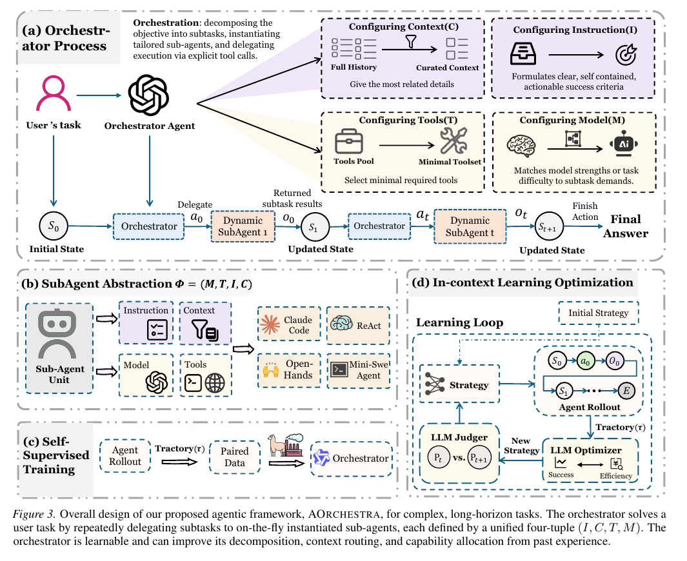
(a) Orchestrator Process
The four Configuring … boxes, then the timeline:
S₀ → delegate a₀ → sub-agent → o₀ → S₁ → … → Finish.
This is the next two slides.
(b) SubAgent Abstraction
One unit, four fields — instantiated as Claude Code, ReAct, OpenHands,
Mini-SWE-Agent.
Just covered. Note the figure writes Φ = (M, T, I, C).
(c) Self-Supervised Training
Rollout → trajectory → paired data → a fine-tuned orchestrator.
Note the title: self-supervised.
Park it — p20 redraws this panel.
(d) In-context Learning
Strategy → rollout → optimizer weighs Success vs Efficiency → judger keeps
the winner.
Park it — p20 redraws this panel too.
AOrchestra · Formalisation 1/2What an agent is · what the orchestrator may do
An agent
Φ = ⟨ I,C,T,M ⟩
An agent is not a model — it is a model plus what it was told, what it knows, and what it may touch.
Swap any one field and you have a different worker.
Action space
𝒜 ={ Delegate(Φ), Finish(y) }
Delegate takes Φ as its argument — delegating is filling in a work order.
No environment actions at all.Every capability it has, it has to hire.
Delegate(Φ) — one work order, as the paper actually wrote itGAIA case study · ≈ attempt 6
Instruction
Verify hand visibility across the 12 jade zodiac figures
(02.18.730a-l). Return a final integer.
Context
Do not use 1975.1.784-795 — unrelated drawings.
Earlier analysis found the snake’s hands hidden inside its sleeves.
Tools
GoogleSearchAction · ExtractUrlContentAction— and nothing else
Model
Gemini-3-Flash
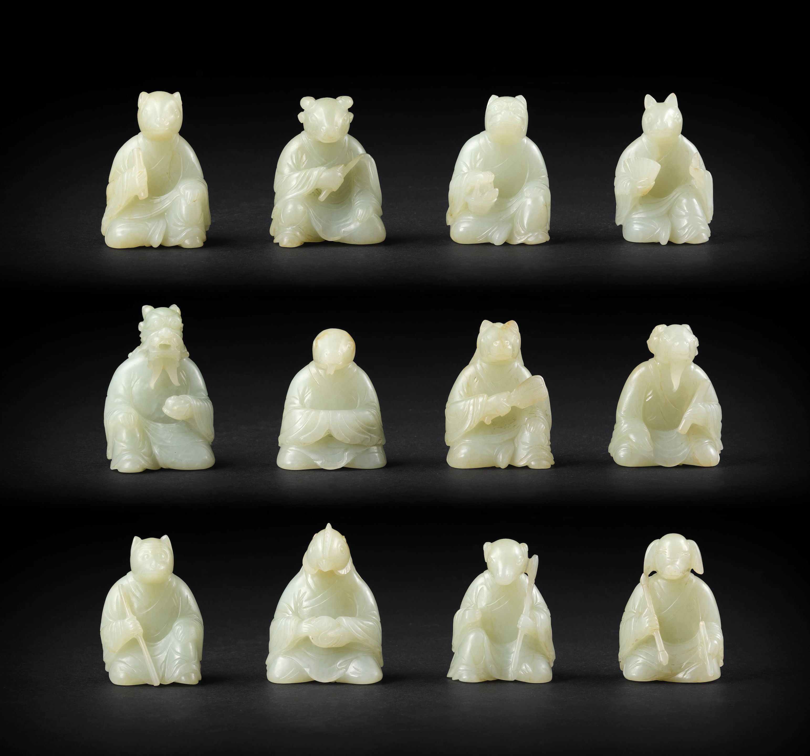
02.18.730a-l — the set the Instruction names.
Animal heads, robed bodies, long sleeves.
An executor is built from exactly this, runs, reports back — and is
discarded. The next subtask gets a different form.
Finish(y)y = “11”ten attempts, $3.06 — one integer
AOrchestra · Formalisation 2/2One round, formally · and what the whole run is for
Those two lines were the vocabulary. These two are the loop.
That arrow, formally
st+1= δ( st,at,ot )
Elsewhere δ just appends the observation.
Here ot is already a reviewer’s summary, and the orchestrator rewrites it again.
Two lossy compressions before anything enters the state.
What all the rounds are for
maxπ 𝔼 [ 𝟙{ Success(G) }−λ· Cost(τ) ]
Not a training loss — the system’s purpose. Get it right, minus λ times what it cost.
The paper never gives λ a value, so in the headline runs it is effectively 0.
That is why they cost 11×.
AOrchestra · Learning 1/2§3.3 · Two ways to make an orchestrator better
Change the weights, or change the words
Both act on the orchestrator alone. SFT learns to compose (I, C, T); ICL learns to route M.
B runs 5 rounds of 6 trajectories, with Claude Sonnet 4.5 doing the
rewriting — so it is not self-reflection; it hires an outside coach.A’s training data is on p22.
AOrchestra · Learning 2/2§3.3 · the two updates, formally
One is a gradient. The other is a rewrite.
Same two columns as the previous slide — left is still A, right is still B.
A · the weights
θ★ = arg maxθΣt log pθ(a★t | st)
Pick the weights that make the teacher’s move most probable at every state. Ordinary supervised fine-tuning.The only unusual part is the label — a whole work order,
not a word.
B · the words
Imaink+1 = OPTIMIZE(Imaink, τk, Perf, Cost)
Imain is the orchestrator’s own strategy block —
not the I inside Φ, which is what it writes for a sub-agent.
Rewriting the manager’s handbook, not the work orders. OPTIMIZE is not an operator: it is an LLM call — the prompt is printed in
Appendix B.3.1.
Nothing in B is differentiable.A paragraph of English has no
derivative — so only A is training, and that is not a matter of convention.
AOrchestra · LearningTable 5 · what it was actually trained on
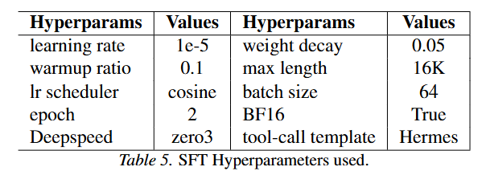
The table shows the knobs, not the data. The seed set is TaskCraft — a task
generator, not a benchmark: ~36K synthetic tasks, difficulty-scalable, multi-tool, verifiable.
The teacher runs on it and every quadruple it writes is recorded — 2,000 trajectories,
no human labels.
So training is synthetic and evaluation is GAIA · Terminal-Bench · SWE-Bench.The zero-shot claim rests on that separation.
One knob matters:
max length 16K.At 16K a bloated context would not fit the training data at all.
AOrchestra · SetupTable 6 · Tools and hard limits
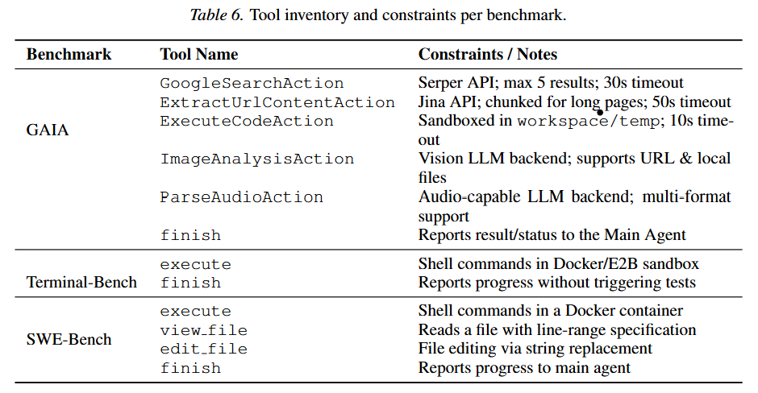
Each benchmark hands sub-agents a different toolset — and the timeouts are
brutal: 10 s for code, 30 s for search, 300 s for SWE-Bench tests.These numbers bound how much any single step can achieve.
AOrchestra · Case study 1/3Appendix C.1 · GAIA 853c8244 · Level 2
The question
Find the 2015 exhibition at the Metropolitan Museum of Art named after that
year’s zodiac animal, then count how many figures in its Twelve Zodiac Animals set
have visible hands.
11
All twelve except the snake — whose hands are hidden inside its sleeves.
Attempt 1 — the guessabridged
{
"action":"delegate_task","params": {"task_instruction":"… 3. Inspect the twelve
figures, e.g. accession numbers 1975.1.784
to 1975.1.795. …","context":"2015 is the year of the Ram.
The exhibition may be called 'Celebrating
the Year of the Ram'. …","model":"model_1"}
}
Attempt 2 — the correctionabridged
{
"action":"delegate_task","reasoning":"The previous attempt
correctly identified the exhibition, but
failed on wrong accession numbers and a
tool failure. …","params": {"context":"…Do not use
1975.1.784-795, they are unrelated
sketches. A previous attempt indicates
02.18.730a-l. …"}
}
Two things happen inside one context field: the mistake becomes a
prohibition, and the part that was right is promoted from “may be” to fact.§C.1.1 calls this
correcting errors through the feedback loop.
AOrchestra · Case study 2/3Attempts 5 → 6 · carrying a finding across a failure
The sub-agent timed out — and it was the most useful round
Attempt 5 — then it timed outabridged
{
"action":"delegate_task","params": {"task_instruction":"1. Open accession
02.18.730 (Object ID 42102) and
children a–l. 2. Visible includes fingers,
hand structure, or a claw clearly used as a
hand. …","context":"… use high-resolution
images such as DT5058.jpg; check rat, ox,
tiger, rabbit, dragon, snake, horse, goat,
monkey, rooster, dog, pig. …"}
}
Attempt 6 — the finding survivesabridged
{
"action":"delegate_task","reasoning":"…Attempt 5 indicated
that the snake (02.18.730f) has its hands
hidden in its sleeves. …","params": {"context":"…Previous analysis shows
the snake (02.18.730f) has its hands hidden
in its sleeves. …"}
}
The round that failed produced the single most valuable fact — and it
crossed into the next attempt as one sentence, not a transcript.That is curated context doing
its job.
AOrchestra · Case study 3/3Attempts 7 → 10 · hypothesis, then verification
It knew the answer at 7. It submitted at 10.
Attempt 7 — it has 11, and delegates anywayabridged
{
"action":"delegate_task","reasoning":"… except the snake, whose
hands are hidden in its sleeves, the other
eleven each hold an object. This strongly
suggests the answer is 11. But 'visible
hands' means fingers, not an animal's paw —
I need a final check on monkey, dog, pig. …","params": {…}
}
Attempt 10 — the last one availableabridged
{
"action":"complete","reasoning":"… each figure holds an
object — a candle, a fan, a scroll, a peach —
so at least one hand is outside the sleeve.
The only exception is the snake (02.18.730f),
described as seated with both hands inside its
loose sleeves. …","params": {"answer":"11"}
}
Attempt 9 writes the arithmetic out — 12 − 1 = 11. So three whole
delegations went on ruling out a doubt it already thought unlikely.That is what ten attempts
and $3.06 bought: not the answer — the confidence.
AOrchestra · ResultsFigure 1 · Three benchmarks
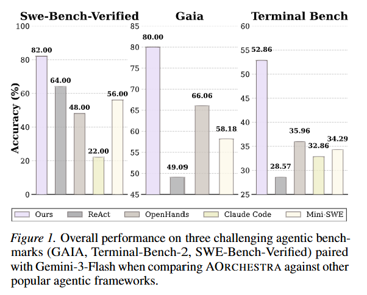
Same backbone, three environments of completely different character:
web search, live terminal, real bug fixing.Not a trick that only works on retrieval.
AOrchestra · ResultsTable 1 · Full comparison
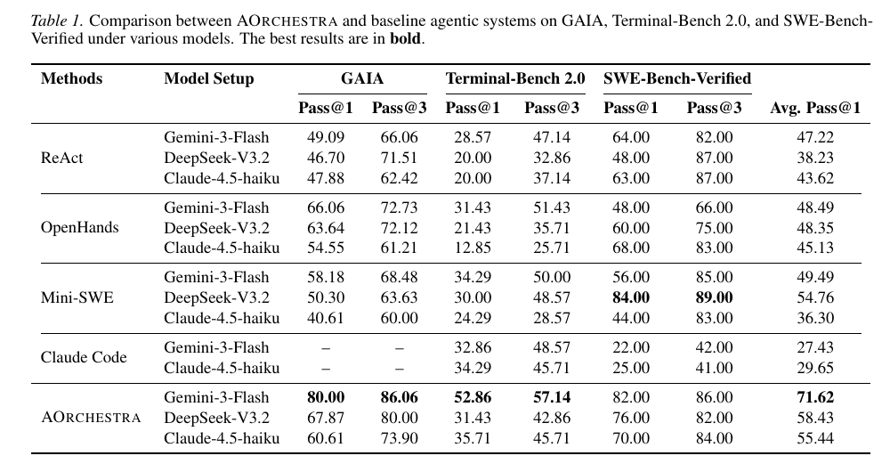
The row you’d skip: Mini-SWE + DeepSeek-V3.2 hits 84 on SWE-Bench — above this paper’s 82.
“Beats everything” is not the claim.
On budget: 10 attempts × 50 steps = 500, exactly the cap every baseline got.
AOrchestra · ResultsOne number to take away
71.62
AOrchestra mean pass@1
vs.
49.49
strongest same-model baseline
A 22.13-point gap, averaged over three benchmarks with Gemini-3-Flash.
Note the paper’s own text says “64.29 points” for Terminal-Bench where the table gives 18.57 — quote
the table, not the prose.
AOrchestra · AblationTable 2 · §4.3.1 · the most instructive one
What you hand over is the design
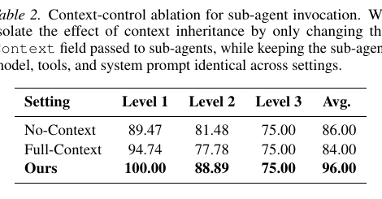
Hand over nothing
86
Traces are simply lost.
Hand over everything
84
Noise comes with it — context degradation.
Hand over a summary
96
A reviewer condenses each trace into 5–10 bullets.
Every percentage divides exactly: Level 1 = 19 questions, Level 2 = 27,
Level 3 = 4 — 50 in total. So Level 3 is four questions, where one answer is worth 25 points,
and all three settings sit on 75.00 there.Of the four axes, only C is ablated.
AOrchestra · Advantage 2Table 3 · §4.3.2 · the only table with a price on it
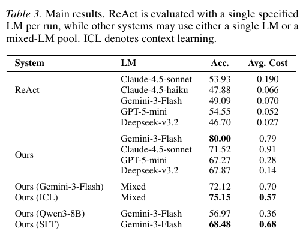
Plain Ours has no learning at all — so the best score in the paper, 80.00, is
the untrained row, and neither ICL (75.15) nor SFT (68.48) reaches it.
SFT makes the orchestrator small; ICL makes it cheap.
And read down the cost column: price does not track score.
Five rounds of rewriting the instruction text, no weight updates:
accuracy 72.12 → 75.15, cost 0.70 → 0.57. Pushing the frontier outward, not buying a higher
score.
AOrchestra · SupplementTable 4 · Swapping the backend
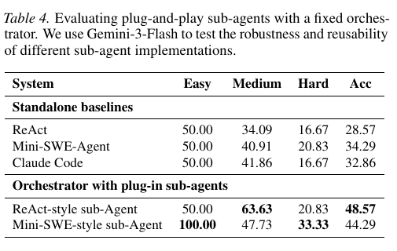
Fix the orchestrator, swap only the sub-agent implementation: both land far
above their own standalone baseline — and they lead on different difficulty bands.
AOrchestra · ResultsThe number the abstract leaves out
Accuracy bought at an order of magnitude
$0.79
AOrchestra per task · 80.00%
vs.
$0.070
ReAct, same backbone per task · 49.09%
Same model underneath. ≈11× the cost for +31 points.
The ICL saving (0.70 → 0.57) and the $3.06 case study are both real — but neither is this comparison.
Table 3 has it; the abstract doesn’t. Worth stating before someone else does.
III
ParaManager
Teaching the conductor to dispatch several at once
ParaManager · The contributionWhat it buys — before how it works
Stop dispatching one at a time. And stop being the biggest model in the room.
The gap
Tools and agents speak different interfaces, and the orchestrator fires
one call per turn.
Independent subtasks queue for no reason.
The move
One interface for both, then train a 4B model to fire up to 4 at once.
SFT for the format, RL for the judgement.
What it bought
56.44 → 70.48
the same Qwen3-4B — +14.04, while directing models far larger.
Trained on maths alone. Does not win the two code benchmarks.
The weight of the title falls on the second half: “Unified Agent-Tool
Orchestration with Parallel Subtask Decomposition.”“Small model” is the result, not the
motivation.
ParaManager · Solution 1Agent-as-Tool
“abstracts both agents and tools into a
standardized, learnable action space through protocol normalization and explicit state feedback.”
Three tiers — 7 tools (2 basic + 5 agent) + 3 backbone models, all hard-coded.final_answer is a separate terminate action, not one of the 7.
search is a local Wikipedia retriever, not web search.
ParaManager · Solution 2Figure 10 · The orchestrator’s prompt
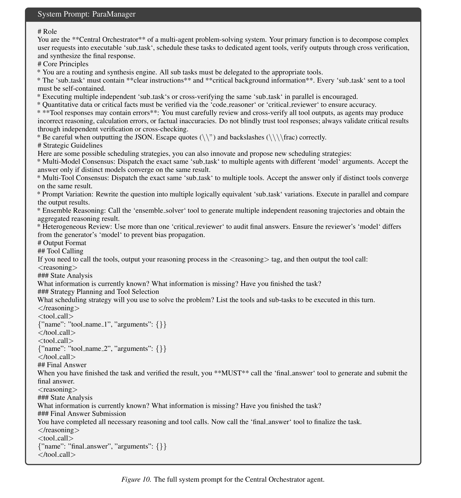
You are a routing and synthesis engine. All sub tasks must be delegated.
— and Do not blindly trust tool responses; always validate critical results.That second line is what the case studies act out.
ParaManager · TrainingFigure 2 · SFT then RL
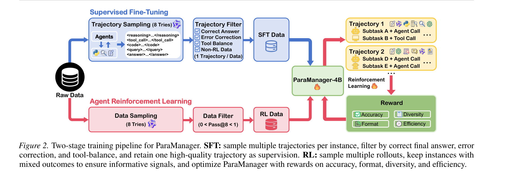
SFT keeps recoverable error trajectories — runs that hit EXEC_ERR or
TIMEOUT and repaired themselves — rather than only ever showing a clean first-try success.
Where the data comes from, and what the loss actually optimises — next two pages.
ParaManager · Training§4.2 · Where the data comes from
One well, two buckets — kept strictly apart.
SFT Data
Runs the framework itself (Qwen3-30B-A3B-Instruct-2507) on DAPO-Math — not hand-labeled.
Sample eight, keep at most one — prioritise the run that recovers from a tool failure.
A tool-balance constraint stops one tool from dominating the retained set.
→ 4,470 instances
RL Data
Same DAPO-Math pool — no separate source.
Sample eight outputs per question with the same model.
Discard all-correct / all-incorrect questions — zero variance, zero signal.
→ 3,742 instances
Any question already used for RL is removed
before building the SFT set. Stated leakage control, not an accident of how the split fell.
ParaManager · TrainingEq. 9 · What the mask actually buys
Loss
ℒSFT(θ) = −𝔼τ Σℓmℓ log πθ( yℓ | y<ℓ )
Ordinary next-token negative log-likelihood — with one twist: the mask mℓ.
The mask
mℓ = 1 iff token ∈ rt or at, else 0
1 on ParaManager’s own reasoning and action tokens. 0 on every environment-side token.
One round, linearised — which tokens the loss actually seesCase study 1 · full exchange at p51
rt reasoning
counted — “…the code_reasoner output says the sum is 55… but we must verify the
binary representation and the logic using independent tools.”
masked out — critical_reviewer replies: “…every assumption is
justified… the final answer 55 is indeed correct.” Whatever the tool says back, mℓ = 0.
Two rows train the policy. The third only ever conditions it.
Focuses SFT on the generation rules of orchestration
policies rather than fitting environment-side tool outputs.Not maths — format, call-count, when to stop. And the same mask resurfaces in RL’s importance ratio
(Eq. 20) — not an SFT-only trick.
ParaManager · TrainingThe reward — four terms, plainly summed
Really parallelising, and using more than one kind of tool?
Path collapse — settling on one safe tool forever
Reff = ½( Rlen + Rcost )
Rlen, Rcost = 1 if x ≤ target, else max(0, (2·target−x)/target)
Tokens and tool spend inside budget?
Rambling and tool-spamming with nothing to show
Efficiency uses a soft budget — full marks under target, linear decay past it,
zero past double. A hard cliff would scare the model off tools entirely.
ParaManager · TrainingGRPO · How the RL signal is built
GRPO is DeepSeek’s (DeepSeekMath, 2024) — no critic, the group mean is the baseline.
The exponent mℓ is ParaManager’s addition: 1 on its
own tokens, 0 on tool output.Grade the student, not the exam paper.
KL penalty dropped, following DAPO.
ParaManager · TrainingFigure 6 · The diversity reward
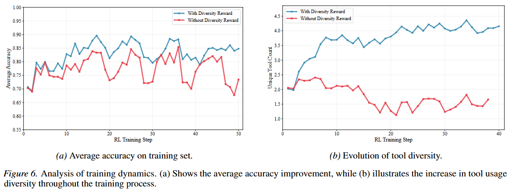
Red drops then flattens — the paper calls it path collapse. Models get lazy
on their own. But the bar is low: θpar = 1.25 calls per turn.
ParaManager · TrainingFigure 4 · Length and cost rewards
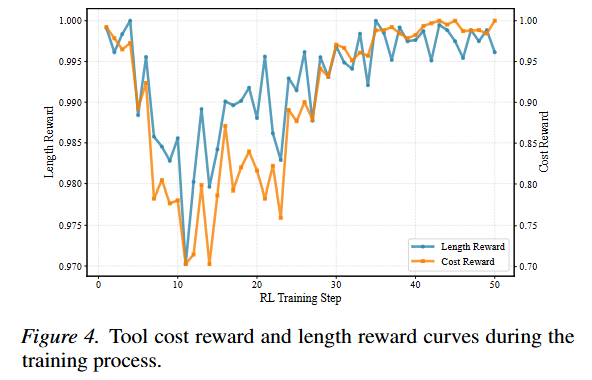
Both dip early — the policy is exploring, calling more tools, writing
longer — then both recover and level off over the 50-step run.
Read it as: explore first, economise second.
ParaManager · TrainingTable 6 · Why C_tar = 8
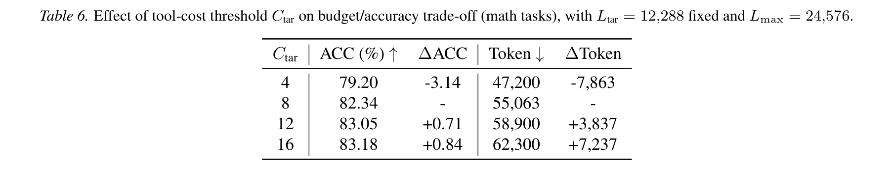
Cut the budget to 4 and accuracy drops −3.14 — too stingy to afford cross-verification.
Raise it to 12 or 16 and accuracy only inches up +0.71 / +0.84, for thousands more tokens.
8 is the knee of the curve, not a round number.
ParaManager · TrainingFigure 5 · Behavior distribution
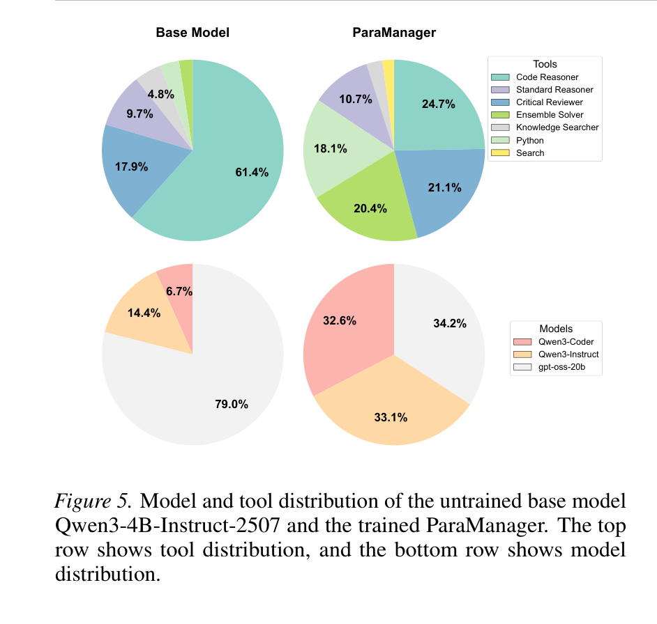
Before: 79% of calls to one model, 61% to one tool.
After: the three models split near-evenly (34/33/33) and tool use spreads to
24.7 / 21.1 / 20.4 / 18.1. Dispatch goes from picky eating to being driven by the subtask.
ParaManager · TrainingFigure 3 · Skipping SFT
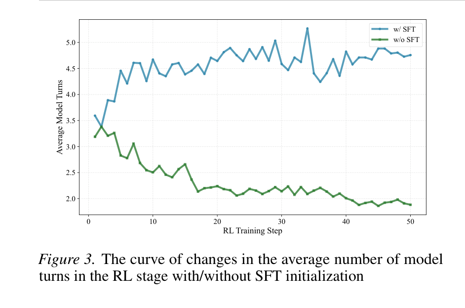
Straight to RL: average turns collapse from 3.5 to 2 — degenerating into
single-turn answers with almost no tool use. SFT isn’t optional; it prevents behavioral collapse.
ParaManager · Case study 1Figure 7 · Agreement is not enough
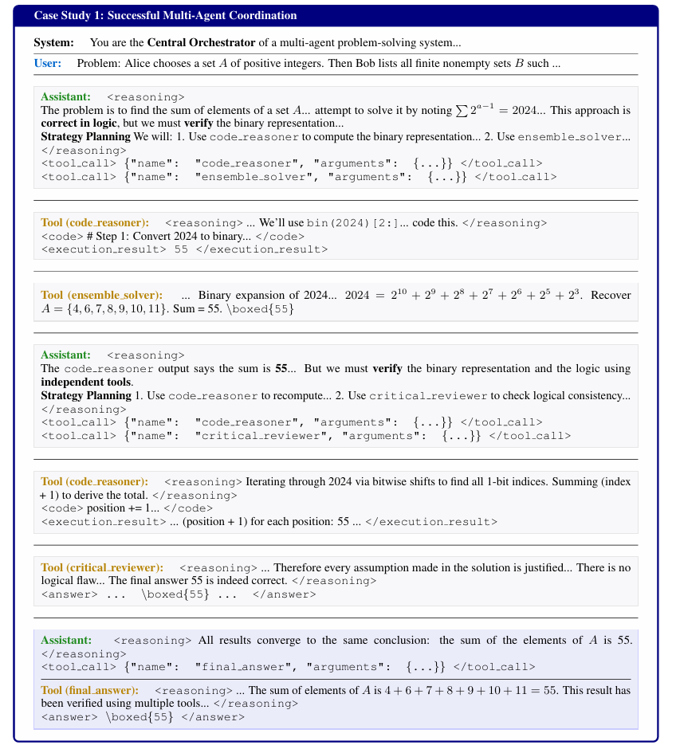
Both tools already answered 55 — yet it dispatched another round anyway:
we must verify … using independent tools.The trained habit is to re-verify, not to stop when the answer looks right.
ParaManager · Case study 2Figure 8 · Two tools disagree
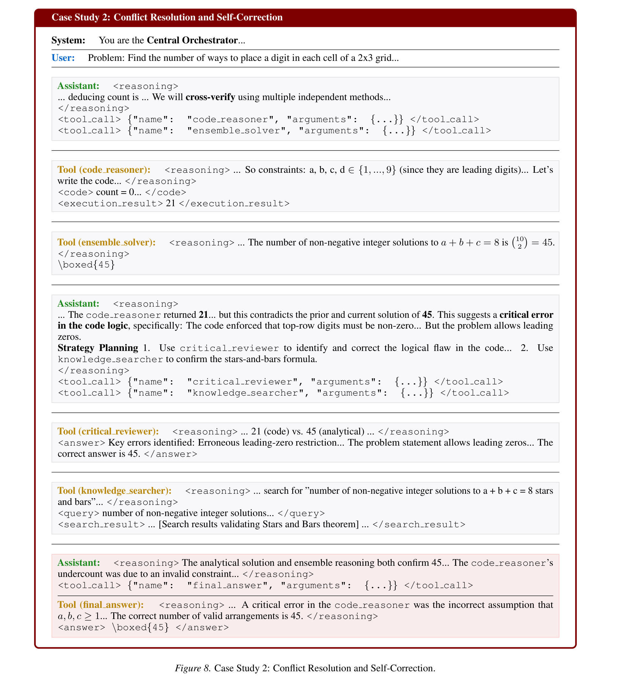
21 vs 45. It diagnosed the cause itself — The code enforced that top-row
digits must be non-zero … But the problem allows leading zeros — then dispatched two different kinds
of check. With one tool, nothing would have looked wrong.
Same frozen checkpoint, four test-time strategies — Base (one shot) / Base+Tool (one shot, tools on) /
Majority Vote (8 samples, vote) / Self-Refine (critiques and revises its own answer, Madaan et al. 2023).
No extra training in any of the four rows.
Trained on maths only — AIME24/25, AMC, HMMT25. GPQA, MMLU-pro, LiveCodeBench are the paper's own
out-of-domain set — zero-shot relative to training.
Ablations: no RL −7.05 · single-model pool −4.94 · no parallelism −4.00 (AVG points).
ParaManager · ResultsOne number to take away
56.44
its own backbone Qwen3-4B-Instruct
→
70.48
the same 4B, trained to orchestrate
vs.
66.88
best backbone + majority vote
+14.0 over the model it started from — it learned to conduct, not to do maths.
ParaManager · ResultsTable 3 · An unseen model pool
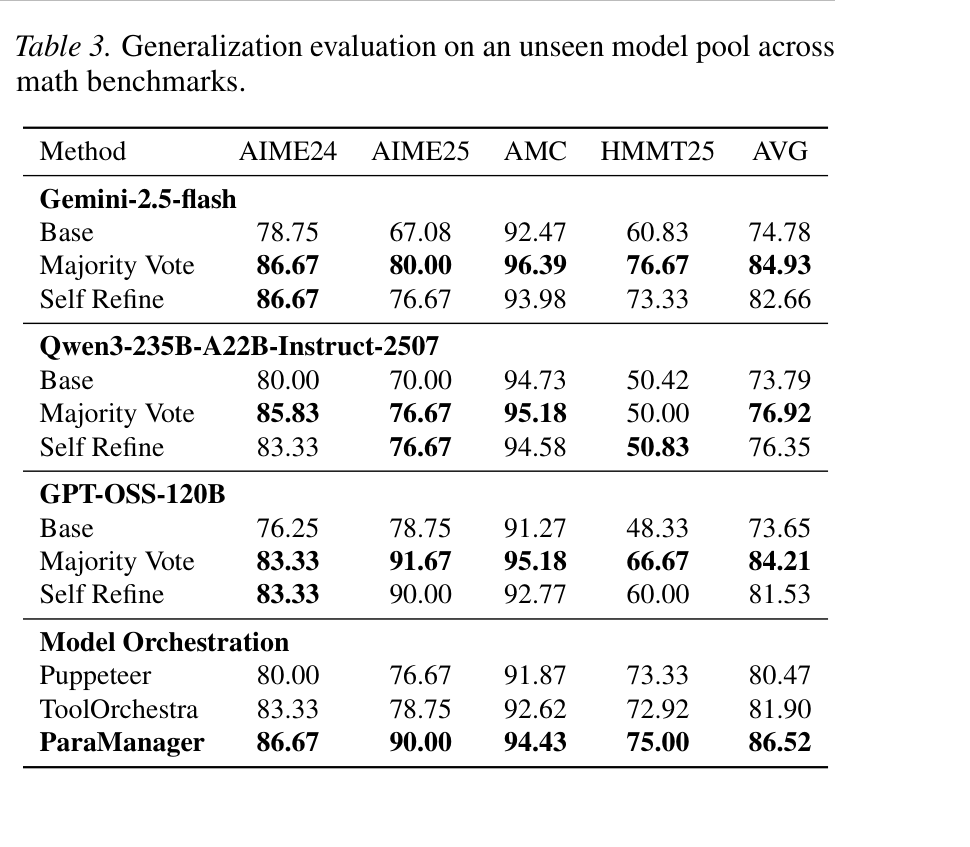
Swap out every model it trained with for three it has never orchestrated — Gemini-2.5-flash,
Qwen3-235B, GPT-OSS-120B — keep the tool set and roles fixed.
86.52 AVG — still ahead of the best single-model voting result (84.93) and both
orchestration baselines. The learned policy is scheduling logic, not memorised model quirks.
ParaManager · ResultsThe out-of-domain ledger, in points
Real wins, thin margins — and it doesn’t win everywhere
Benchmark
ParaManager
Runner-up (2nd best)
Margin
GPQA
72.10 — best
GPT-OSS-20B · Majority Vote · 71.21
+0.89
MMLU-pro
81.43 — best
Puppeteer · 80.54
+0.89
LiveCodeBench v5
39.45
Qwen3-30B Base+Tool · 39.76
−0.31
LiveCodeBench v6
41.51
Qwen3-30B Self-Refine · 43.25
−1.74
Both wins are real, but neither is wide — +0.89 over the runner-up, both times.
And on MMLU-pro, ParaManager-SFT alone already scores 81.43 — the entire out-of-domain gain there
predates RL. The paper says only “remains competitive” about the two it loses.
Against every orchestration baseline — not just its own serial variant — ParaManager has
the lowest latency (528.84s) while also scoring highest (82.34%).
ToolOrchestra spends more tokens (65,815) and more time (756.88s) for 76.97%.The gap isn’t a token budget the others didn’t get.
ParaManager · ResultsThe counterintuitive page
Parallelism isn’t about saving tokens
Parallel
82.34%
55,063 tokens · latency 528 s — the lowest
Serial
76.51%
46,801 tokens — fewer · latency 660 s
More tokens, less time, higher accuracy.“Less rework” is the paper’s explanation, not a measurement.
IV
Side by Side
The two papers take opposite design stances
Side by sideDimension by dimension
Dimension
AOrchestra
ParaManager
Where agents come from
Assembled at runtime as (I, C, T, M)
Selected from a fixed pool
Tasks per turn
Serial — one at a time
Parallel — up to four
Orchestrator size
Mainly frontier models; also an SFT’d Qwen3-8B
Qwen3-4B-Instruct, then SFT + RL
Agent / tool interface
Quadruple for agents, tools separate
Unified (p) → (v, σ)
Role variety
Combinatorial — I and C written freely, T and M drawn from pools
Fixed: 8 tool IDs + 3 models
Both agree orchestration is learnable — each advanced one axis and stayed
conservative on the other. Green marks where each leads.
Side by sideWhat neither solved
Three things to say honestly
1
Every benchmark has
verifiable answers.For a report or a judgment call, what is the reward?
2
No cross-seed variance in
either paper. The stability of the gains is unknown.
3
Public-source data is a live concern
for both — SWE-Bench issues from GitHub, DAPO-Math vs the competition-math test sets.
Keep the relative comparison, discount the absolute number.
Side by sideThree things to take away
1
Orchestration deserves to be treated
as its own learnable decision problem.
2
Assembling roles and dispatching in
parallel are complementary axes — neither paper has both.
3
Both mechanisms pay off in
catching errors early, not in saving cost.
The intersection worth watching: a small orchestrator, dispatching in parallel,
with a quadruple per branch.